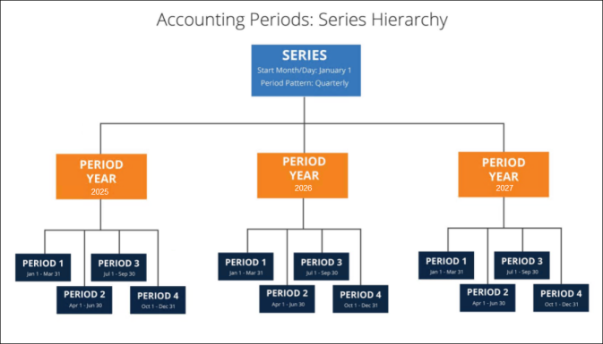
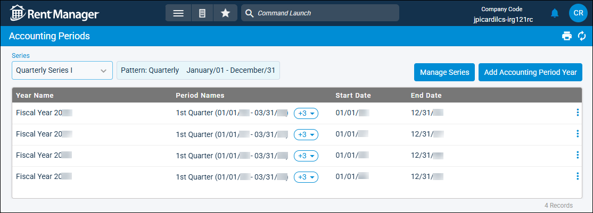
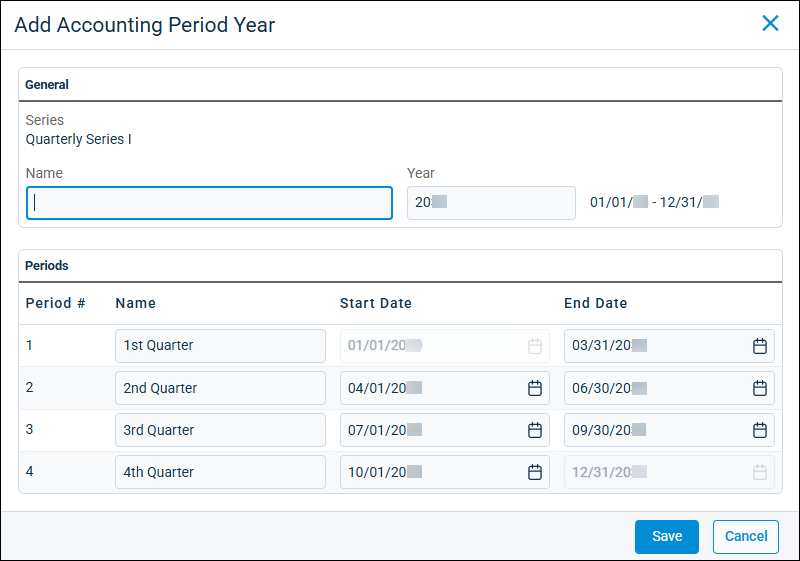
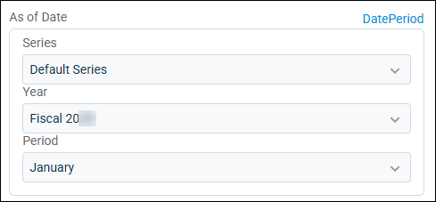
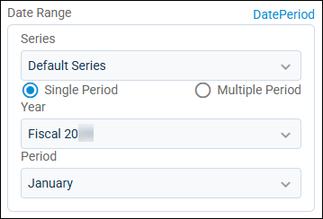

Source: https://rmxhelp.rentmanager.com/Topics/Express/KB/Accounting-Periods-Set-Up.htm
Set Up Accounting Periods
Accounting periods are the lengths of time for which financial statements are typically prepared. Some statements may need to be prepared on a yearly, monthly, quarterly, or semi-annual basis. However, in some cases financial reports may be generated for atypical date ranges.
In Rent Manager, accounting periods are defined in three parts: series, period years, and periods. The series defines the rules that must be followed by the periods, period years contain the periods for each fiscal year, and the periods are the time frames for which reports may be generated. The relationship between these three parts are displayed using a quarterly series as an example in the following image:

To enable accounting periods, you must first check the Enable accounting periods option in system preferences. After enabling this option, you can either use accounting periods as the default for financial statements or keep calendar dates as the default for the As of Date report option. For more information, refer to General Ledger Settings (System Preferences).
Related Privileges
| Group | Privilege | Column |
|---|---|---|
| Accounting | Accounting periods | Add, View |
For more information, refer to Control User Access.

Step 1: Create an Accounting Series
You must first establish the series before creating a period year or defining periods. The accounting series establishes the set of rules to be followed every created period. In the series, you can define when each period starts and the length of each period.
A default series is created for you when accessing accounting periods for the first time. This series has a monthly pattern, meaning each period lasts for one month, that starts on January 1 and ends on December 31. This default can be modified, or a new series can be created.
To create a new series, do the following:
-
Go to
 arrow_forward
arrow_forward  Administration, then go to .
Administration, then go to . -
In the top right-corner of the page, click Manage Series.

-
Click
 Thi Add Series.
Thi Add Series. -
In the Name field, enter a unique identifier for the new series.
-
Enter a Start Month/Day. For example, if you're creating a series to define your company's fiscal year that begins on April 1, the Start Month/Day would be April 1. The End Month/Day automatically updates so that one full year is covered by the series.
-
In the Period Pattern field, select one of the following options:
Pattern Description Monthly
Accounting periods last one month for this series.
For example, if the Start Month/Day is January 1, the first three periods are January 1–January 31, February 1–February 28, and March 1–March 31.
Quarterly
Accounting periods last one quarter of a year, or three months, for this series.
For example, if the Start Month/Day is January 1, the first three periods are January 1–March 31, April 1–June 30, and July 1–September 30.
Semiannual
Accounting periods last a half of a year, or six months, for this series.
For example, if the Start Month/Day is January 1, the two periods of the fiscal year are January 1–June 30 and July 1–December 31.
-
To ensure new periods can be created for this series, check Active.
-
To make this series the new default when generating financial reports, check Default
-
Click Save.
The new series is created.
Step 2: Add Period Years and Periods
Once an accounting series is defined, the period years and periods define when and how an accounting series is implemented. Period years are the fiscal years that contain accounting periods, and may not always be the same as a calendar year depending on the series used. Accounting periods determine how the fiscal year is segmented.
To create a new period year , do the following:
-
In the Series field, select the series to be used from the drop-down list at the top left of the page.
-
On the top right of the page, click Add Accounting Period Year.

-
Enter a unique Name for the period year.
-
Verify or enter the period Year. If no period years were defined for the series, the current years displays by default. If period years were previously defined, the next undefined year displays.
-
The Periods tile automatically populates based on the rules defined by the accounting series it is added under.
Verify the information in the following columns:
Column Description Period #
The number of periods included in the period year. This column cannot be modified.
Name
The name of each period defined by the Period Pattern selected in the series.
You can modify the period name by clicking in the cell and entering a new name for the period.
Start Date
The starting date of each period. The Start Date of the period year's first period cannot be modified.
You can modify a period's start date by clicking in its cell. The preceding period's End Date is adjusted accordingly.
End Date
The starting date of each period. The End Date of the period year's last period cannot be modified.
You can modify a period's end date by clicking in its cell. The succeeding period's Start Date is adjusted accordingly.
-
When finished, click Save.
The period year is added and can be used in financial reports.
Next Steps
Related Privileges
| Group | Privilege | Column |
|---|---|---|
| Accounting | Accounting Periods | View |
| Letter/Email Templates/Reports/Packets | Run reports | Enabled |
| Run accounting reports | Enabled |
Additionally, on the Reports tab, you must have access to the desired financial report(s).
For more information, refer to Control User Access.
Accounting periods are primarily used when running financial reports. Depending on the report, there is either an As of Date or Date Range report option. You can implement accounting periods on either report options by selecting Period at the top right. Once the date options are selected, you can run the financial reports as usual.
Financial Reports with an As of Date Option
For financial reports with an As of Date report option, the report runs from the beginning of the fiscal year to the end of the specified accounting period. You can select the accounting period by selecting the series, period year, and period you require.

Financial Reports with a Date Range Option
For reports with a Date Range option, you can either run the report for a single period or multiple.
| Option | Description |
|---|---|
|
Single Period |
The Single Period option would run the report from the beginning to end date of the specified accounting period. For example, for a series with a monthly pattern with January selected within a fiscal year, the financial report runs for the month of January.
 |
|
Multiple Period |
If Multiple Period is selected, the report runs from the beginning of the Start Year and Start Period option to the end of the End Year and End Period option. For example, for a series with a monthly pattern that has the months January and June as the start and end periods, respectively, in the same fiscal year, the financial report runs for the six-month time span. |